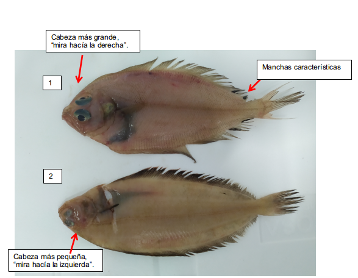
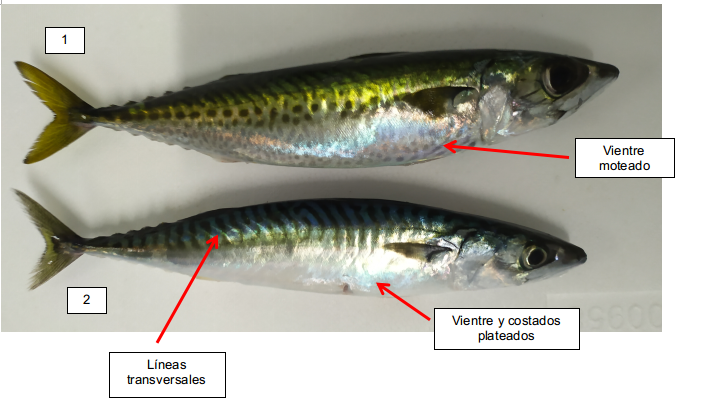
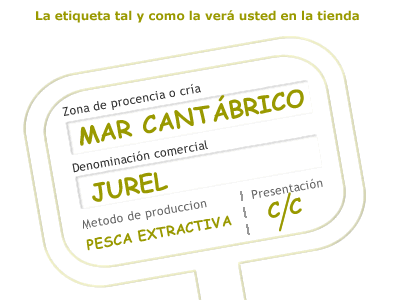

31 de septiembre de 2020
Gallo (Imagen 1), rapante, bruixa, bruixa de quatre taques, todos son distintas denominaciones de un mismo pescado, el gallo (Lepidorhombus boscii). Todas ellas son denominaciones autonómicas validas según la legislación , y todas pueden mostrarse en los carteles de la pescadería.
¿Pero es lo mismo un besugo blanco o besuguito que un besugo? y ¿Una caballa y un caballón (Imagen 2)? La respuesta no, no son la mismo y por supuesto no valen lo mismo. Aunque nutricionalmente sean igual de buenos un besuguito, no es un besugo pequeño, ni un caballón una caballa grande.
Imagen 1: Lepidorhombus boscii – Gallo(1) y Glyptocephalus cynoglossus – Mendo (2). Fuente: Propia.
Imagen 2: Scomber colias – Caballa del sur o Caballón en la zona de Galicia (1) y Scomber scombrus – Caballa (2). Fuente: Propia.
Ahí está la picaresca, son prácticas legales, pero hasta cierto punto el cliente desconoce realmente que compra, y la cantidad de nombres que reciben los distintos pescados según la zona de españa no ayuda. En los mostradores de la pescadería se suele encontrar una variedad grande de pescados, muy parecidos entre ellos. Además los carteles en los que se indica la información suelen estar en un tamaño apto para gente con vista de lince. Si una persona joven le cuesta leer lo que pone en esas letras tan pequeñas(Imagen 4), no quiero imaginar a un anciano…..
Según el Reglamento 1379/2013 en los pescados frescos no preenvasados se debe facilitar al consumidor de forma obligatoria, y en carteles o tablones (Imagen 3) la información siguiente:
- Denominación comercial de la especie y nombre científico (Las denominaciones propias de las C.C.A.A acompañarán al denominación comercial oficial).
- Método de producción.
- Zona de captura.
- Si el producto ha sido descongelado.
- La fecha de duración mínima, cuando proceda.
Pero la legislación también menciona que esta información se indicará en un lugar destacado, de manera que sea fácilmente visible, claramente legible y, en su caso, indeleble.

Imagen 3: modelo de etiqueta que se puede encontrar en cualquier pescadería.Fuente: OCU.Pese a que se suele cumplir con la obligación de proporcionar la información, el medio con el que se hace, siembra dudas sobre su intencionalidad.
Puede parecer fácil reconocer varias especies similares cuando tienes una al lado de la otra, pero la tarea se complica cuando están expuestos en un mostrador (Imagen 4) y no hay con que comparar. Por no hablar, que si fuese cocinado ya se convierte en una tarea muy complicada solo apta para paladares expertos y entrenados.
En definitiva, la picaresca esta a la orden del día y si no queremos que nos den gato por liebre conviene conocer aquello que compramos y siempre preguntar al pescadero todas nuestra dudas.
Fuentes:
- Reglamento (UE) Nº 1169/2011 del Parlamento y del Consejo de 25 de octubre de 2011sobre la información alimentaria facilitada al consumidor y por el que se modifican los Reglamentos (CE) no1924/2006 y (CE) no1925/2006 del Parlamento Europeo y del Consejo, y por el que se derogan la Directiva 87/250/CEE de la Comisión, la Directiva 90/496/CEE del Consejo, la Directiva 1999/10/CE de la Comisión, la Directiva 2000/13/CE del Parlamento Europeo y del Consejo, las Directivas 2002/67/CE, y 2008/5/CE de la Comisión, y el Reglamento (CE) no608/2004 de la Comisión.
- Reglamento (UE) nº 1379/2013 del Parlamento Europeo y del Consejo, de 11 de diciembre de 2013, por el que se establece la organización común de mercados en el sector de los productos de la pesca y de la acuicultura, se modifican los Reglamentos (CE) nº 1184/2006 y (CE) nº 1224/2009 del Consejo y se deroga el Reglamento (CE) nº 104/2000 del Consejo.
- Resolución de 24 de mayo de 2019, de la Secretaría General de Pesca, por la que se publica el listado de denominaciones comerciales de especies pesqueras y de acuicultura admitidas en España
- Real Decreto 126/2015, de 27 de febrero, por el que se aprueba la norma general relativa a la información alimentaria de los alimentos que se presenten sin envasar para la venta al consumidor final y a las colectividades, de los envasados en los lugares de venta a petición del comprador, y de los envasados por los titulares del comercio al por menor.
- https://www.mapa.gob.es/es/pesca/temas/mercados-economia-pesquera
- https://www.observatorio-acuicultura.es/sites/default/files/images/adjuntos/libros/guia_pescados_cam_web.pdf/2Denomin_comerc.aspx
- Guía de bolsillo sobre las nuevas etiquetas de la UE para los productos de la pesca y de la acuicultura.